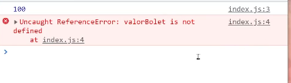

Escopo
Material de apoio
Escopo é o que gerencia a disponibilidade das variáveis.
Exercício escopo de bloco
A const não pode ser acessada dentro de um bloco fora dele, ela é limitada a aquel bloco ao qual foi inicializada. Um bloco de código define um escopo para variáveis do tipo const e let
Existe no javascript o bloco autonomo, e essas variáveis também são limitadas ao bloco. Mas no caso do var, ele estrapola os limites do escopo de bloco.
Exercício escopo autonomo
Diferente do bloco a função é capaz de delimitar um escopo para variável do tipo var.
Exercício escopo função
E caso eu crie uma função dentro de outra função, ela também ficará restrita ao escopo da função a qual pertence.
Exercício escopo de função com declaração de uma função dentro.
O escopo global é o escopo que pode ser acessado de qualquer parte do código. Uma variável no escopo global pode ser chamada de qualquer escopo. O escopo global não precisa ser necessáriamente dentro da folha do javascript, se ela for declarada na folha de html ainda é um escopo global, desde que seja declarada antes de o documento ser chamado no HTML.
exercício escopo global.
Hoisting
Material de apoio
Material de apoio 2
O hoisting é um comportamento que acontece por debaixo dos panos no javascirpt, de forma geral as variáveis podem ser pensadas de duas maneiras, a declaração e a atribuição. Na prática o javascript entende elas como duas instruções separadas. Veja o exercício.
Exercício Declaracao e atribuição.
Todas as declarações de variáveis ao ser executadas são movidas para o topo do escopo limite, seja ele global ou local. Isso é chamado de hoisting, ele move somente a declaração, e não a atribuição, essa é deixada no lugar onde foi atribuída.
Exercício hoisting
Era esperado no exercício que houvesse um erro de referência, mas pelo tipo de hoisting sofrido pela variavel do tipo var, ela recebe um undefined no lugar de erro. Já as variáveis do tipo let e const não podem ser lidas ou escritas até que tenham sido totalmente inicializadas. Então dará erro de referência, apesar de ser içada não retornará valor nenhum
Exercício de Hoisting let
Para que a variável seja dada como undefined, é preciso que seja ao menos inicializada antes de ser chamada. E isso garante uma melhor prática, por que isso obriga a declarar antes de usar.
Exercício erro de referência no console
Funções anônimas
Funções anônimas são funções que não tem um nome, ela pode ser usada para atribuir uma função a uma variável por exemplo e retornar algo da função para variável.
Exercício função anonima
Dessa forma do exercício é possível ter uma função dentro da variável. Ela pode ser invocada como função, ou como resultado da função.
è possível passar parâmetros para essa função as colocando dentro dos parâmetros normais. Essa função do caso pode não ter um nome, mas pode ser chamada pelo nome da variável.
Arrow functions
Material de referência.
Também são funções anonimas que são escritas de forma reduzida. A primeira redução é trocar a palavra function por =>. A segunda redução é que caso a função só tenha um parâmetro não será preciso colocar os parênteses, apenas ele e a arrow function.
E caso a função só tenha uma linha é possível remover também as chaves e o return, deixando tudo na mesma linha.
Exercício arrow function
Higher order function
Passando função como parâmetro
Também chamado de callback, funções que recebem funções como parâmetro, ou retornam outras funções.
Uma função pode retornar outra função ao invez de uma string ou números.
Exercício Higher order function

Neste exercício uma função é passada como parâmetro para outra função. Observe que a primeira função criada "calcularAnoDeNascimento" é armazenada dentro de uma variável e é uma função anonima. Portanto, para que ela seja chamada é preciso ter sido inicializada antes.
Os parâmetros da função estão nulos até que se receba algo, mas existem 3 para entrada.
Abaixo tem a função anonima "imprimirAnoDeNascimento" que recebe o parametro anoDeNascimento.
A chamada da função calcular ano de nascimento foram informado 3 valores, (33, 3, imprimirAnoDeNascimento) quando a função é anonima é colocada sem os parênteses ela funciona como uma variável. Dentro da função que recebeu os parâmetros foram feitos alguns calculos e condições, e um dos valores obtidos foi dado como parâmetro para a função que foi passada na variável imprimir. Importante observar que a variavel ano de nascimento poderia ter qualquer nome, isso não impediria de ser passada como parâmetro. E que a chamada dessa função só ocorreu por que se usou o parâmetro que foi recebido com parênteses e um paâmetro para ele. Se eu apenas desse um console.log nesse parametro imprimir, seria mostrada a função que foi recebida e não a execulção dela.
Retornando função como parâmetro
Pense que você precisa fazer calculos matematicos para dobrar, triplicar e quadruplicar um número aleatorio. Você poderia fazer assim:
function dobrar(numero){
return numero * 2
}
function triplicar(numero){
return numero * 3
}
function quadruplicar(numero){
return numero * 4
}
console.log(dobrar(2))
Todas as vezes que eu precisar de um novo multiplicador terei de criar uma noova função e setar manualmente qual será o valor de multiplicação que aquela função irá retornar.
A próxima forma de fazer isso é fazer com que a função retorne uma função e resolver com um parâmetro para cada.
Exercício higher order function
Agora neste caso é possível criar uma função que multiplica retornando uma função com o número multiplicado. E para acessar o parâmetro das duas funções será preciso guardar em uma variável a função de multiplicação com seu parâmetro

Ao guardar em uma variavel a função, se usar um console.log será mostrado a função, a questão é, salve o parâmetro, quando a função for chamada já tendo parâmetro, o parâmetro informado na chamada da variável será para a função que armazenou, e a próxima para função da qual retorna.
Dessa forma, cada novo tipo de parâmetro multiplicador que for cliado é só declarar a variável atribuindo a função com seu parâmetro multiplicador.
Array
Material de Apoio
Ele pode armazenar qualquer tipode dado numerico, string, boolean e até mesmo outro array.
Exercício array
O array pode ser identificado por ser aberto e fechado por colchetes e os elementos do array são separados por vírgula. O acesso dos itens do array é feito pelo nome da variável e seu índice, a posição do elemento, passado dentro de colchetes. Caso a posição da chave não conste no array ele irá retornar undefined.
Arrays multidimensionais
Quando um array tem um arry dentro dele, ele é multidimensional. Ele pode ter arrays infinitos dentro, mas é normal encontrar apenas bidimensionais.
Exercício array multidimensional
Para acessar um array interno dentro do outro será preciso colocar mais de uma chave índice após a outra. Para imprimir de forma que fique mais fácil de visualizar no console é possível usar o método table()
Iterar sobre um array
Exercício iterar sobre array
Para iterar sobre um array é nessesário usa um laço de repetição como o for
for(let i = 0; i < frutas.length; i++){
console.log('Fruta ' + frutas[i])
}
Dessa forma será possível acessar uma propriedade do aray.
Outra forma de fazer isso é usando o laço forEach() Dessa forma é presico acessar a propriedade e colocar .forEach() que é o método. Essa função é um callback pois uma função é passada como parâmetro para ela. Existem 3 parâmetros que podem ser passados no callback do forEach:
Outros métodos que podem ser usados no array são
- array.push(). Adiciona elementos ao final do array
- array.pop() . Retira o ultimo elemento do array
- array.shift() . Remove o primeiro elemento do array
- array.unshift() . Adiciona um elemento no começo do array.
- array.index.Of() . O que for informado dentro do indexOf será informado sua chave indice.
Slice e splice
O slice é um dos métodos para manipulação de array. Ele corta um pedaço desse array sem afetar o array original, somente extraindo uma parte desse array
Exercício slice
O slice tem dois parâmetros, o número inicial da chave index e o número final do pedaço que ele vai capturar gerando uma cópia.
O splice é muito bom quando se quer remover um ítem pela posição do indice do indice e gerar um totalmente novo. Diferente do outro método ele remove do array original.
Exercício splice
È possível com o splice remover e adicionar ao mesmo tempo. Para isso é possível passar logo após as chaves índice os elementos que deseja inserir como parãmetro.
let frutasAdicionadas = frutas.splice(1,2, 'Jaca', 'Amora')
Objetos
Material de apoio
Um objeto tem propriedades que são as características do objetos.
Mesmo que o objeto seja uma const é possível trocar os valores das propriedades dentro dele, mas não é possível atribuir um novo objeto.
Exercício objetos
É possível inserir propriedades dentro de um objeto colocando objeto.novapropriedade = x ou navegar dentro dele para verificar valores de propriedades.
Métodos
Material de apoio
Método é uma função dentro de um objeto.
Exercício método
Não se preocupe com o this, para chamar um método de um objeto use objeto.função() , isso que irá dizer que vai invocar a funçao.
This
Material de apoio this
Material de apoio strict mode
O this funciona com escopos, e pode ter dois tipos o global e o local.
Ao começar a criar o código está no escopo global
Exercício this
Se eu passar o this no escopo global será igual ao objeto window. E se eu pegar o this declarado do escopo global e o chamar dentro de uma função, pode-se dizer que o this está vazando o escopo global para dentro da função.
Para gerenciar melhor melhor a política do escopo, é só usar o 'use strict' no início do documento js, fazendo com que o escopo global não vaze para dentro da função.
Variáveis declaradas com this.variavel = x, são inseridas diretamente no objeto window.
This no contexto do método
Exercício this
A principio o this no contexto do método não é preciso fazer uso do use strict, ele referencia o escopo em que está se usado sozinho. Caso usado com this.propriedade irá referenciar a propriedade já que o this nesse caso é igual ao objeto.
Exercício this no método
Observe o exemplo do exercício. Quando inserindo um método dentro do objeto se passou o proprio objeto para acessar sua propriedade. Com esse caso se tratando de um objeto, o contexto no qual está inserido o this permite que não seja necessário passar como parâmetro usando apenas o this, fazendo referência ao proprio objeto ao qual está sendo instanciado.
Diferença entre array e objetos
O array funciona muito bem quando se trabalha com listas, quando se coloca vários elementos dentro de uma lista.
Exercício array x objetos
Uma lista de frutas seria muito bem representada por um array
Já o objeto nos ajuda a aproximar o objeto do mundo real e agrupar informações. Seria muito útil armazenar os valores de um ecomerce com uma seção de vendas por exemplo.
Um array pode receber um objeto caso seja necessário e é muito útil. Para acessar é usar a chave index e o .propriedade
Objetos e arrays em conjunto
È possível usar um objeto dentro de um objeto.
Exercício objeto e array
Bastante usado em uma estrutura de JSON, é possível que um array com um objeto seja colocado em uma propriedade de um outro objeto.
Para se acessar esses elementos é preciso que se utilize os caminhos e chave index para acessar estas propriedades. Caso seja coeso, é possível usar essa estrutura do exercício no seu código.
DOM
Atravez da palavra document, é possível acessar e remover conteúdos de elementos html usando o document.
Usando o devTools será possível ver que o document é todo o conteúdo da página.
Selecionando elementos com document
Material de apoio queryselectorAll
Material de apoio DOM
Para armazenar um elemento é possível que se coloque um document.getElementById(), como é recomendado ter só um id com mesmo nome por página ele é eficaz para buscar esse elemento HTML.Irão existir outros métodos para capturar elemento DOM, são eles:
- document.getElementByClassName() retorna uma HTML collection
- document.getElementByTagName() retorna uma HTML colection
- document.getElementById() retorna uma variável
- document.querySelector() deve ser informado com . e # qual a busca deve ser feita e só retorna um elemento
- documento.QuerySelectorAll() retorna uma node list.
Exercício buscas de elementos DOM
Manipulação de DOM
Material de apoio
Exercício innerHTML
O que é feito no exercício é imitar uma tela de rede social, pegar os campos que foram preênchidos no input e inserir na tela por meio de uma chamada de função.
Para isso é preciso buscar o input em que o usuário irá preêncer o campo, acessar esse valor.
Depois é necessário salvar esse valor e imprimir ele na tela. em um campo abaixo. Para isso pode-se usar o innerHTML = , caso usar somente o = ele irá sobreescrever, mas se usar += irá adicionar mais de um.
Manipulando estilos
Material de referência DOM
Material de referência atributos DOM
Para fazer a alteração de uma cor de fundo é preciso pegar o elemento DOM com algum dos métodos citados e usar o objeto style pelo javascript.
function alterarCorDeFundoPrimeiroPost(){
let posts = document.getElementsByClassName('post')
console.log(posts)
let primeiroPost = posts[0]
primeiroPost.style.backgroundColor = 'red'
}
Todas as propriedades CSS podem ser alteradas com esse objeto. A outra forma de fazer é adicionando uma classe pre configurada usando este método:
function aumentarFonteSegundoPost(){
let post2 = document.getElementsByClassName('texto-post')
post2[1].classList.add('fonte-grande')
// adicionou la do style do meu html a classe fonte grande.
}
Exercício DOM style
Para modificar os atributos de um checkbox por exemplo é possível fazer com javascript
function marcarRadio(genero){
let radioMasculino = document.getElementById('genero-masculino')
let radioFeminino = document.getElementById('genero-feminino')
if(genero === 'M'){
radioMasculino.checked = true
}else if( genero === 'F'){
radioFeminino.checked = true
}
}
Essa condição foi feita interagindo com um botão que altera o valor de um checked
Eventos DOM
Um evento js pode ser chamado pelo html ou pelo havascript. Um evento de click por exemplo pode ser chamado pelo html
< button onclick="mostrarAlerta()">
Dessa forma é necessario colocar um ON na frete do evento que será monitorado.
Já pelo javascript é possível fazer o monitoramento do elemento o capturando e colocando um listner
let select = document.querySelector('select[name=estado]')
document
.querySelector('select[name=estado]')
.addEventListener('change', function(event)
{
console.log(event.target.value)
}
)
Exercício eventos DOM
Como encontrar erros
O primeiro lugar que você pode olhar se tem algum erro na aplicação é no console do navegador e o tipo de erro que foi apresentado.

Primeira coisa, leia o erro com calma e olhe em qual linha esse erro foi apresentado.Só isso provavelmente já vai dar uma solução ao problema. Quando vai procurar o erro para essa solução pesquise no google primeiro pela linguagem e escreva o nome do erro na frente.
Exercício procurando erros
Usar o script sempre no final da folha é uma forma de garantir que todos os elementos capturados pelo DOM não sejam nulos.
let inputTelefone = document.getElementById('telefone');
console.log(inputTelefone);
inputTelefone.disabled = true;
Com esse exemplo acima imagine que esteja acima do código HTML, isso é por que o código não foi renderizado ainda.
O desable é para desabilitar a digitação dentro de um campo